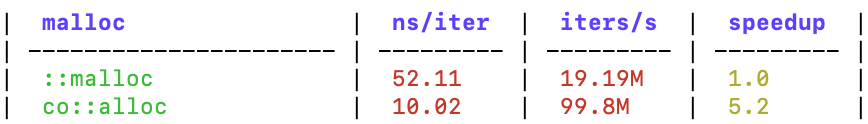

#coost 简介


coost 是一个兼具性能与易用性的跨平台 C++ 基础库，其目标是打造一把 C++ 开发神器，让 C++ 编程变得简单、轻松、愉快。
coost 简称为 co，曾被称为小型 boost 库，与 boost 相比，coost 小而精美，在 linux 与 mac 上编译出来的静态库仅 1M 左右大小，却包含了不少强大的功能：
- 命令行与配置文件解析(flag)
- 高性能日志库(log)
- 单元测试框架
- 基准测试框架
- go-style 协程
- 基于协程的网络编程框架
- 基于 JSON 的 RPC 框架
- 原子操作(atomic)
- 高效字符流(fastream)
- 高效字符串(fastring)
- 字符串操作(str)
- 时间库(time)
- 线程库(thread)
- 定时任务调度器
- 面向玄学编程
- 高效 JSON 库
- hash 库
- path 库
- 文件系统操作(fs)
- 系统操作(os)
- 高性能内存分配器
文档付费声明
本文档采取付费阅读模式，用户可选择如下付费方案之一：
- 每个用户一次性支付 59￥，获得本文档永久阅读权。
- 每个用户支付 23￥/年，持续 3 年，之后获得本文档永久阅读权。
#coost 发展历程
-
2013-2015 年，Alvin(idealvin) 在使用 google gflags、glog、gtest 等时，感到有些繁琐，就自己动手实现了相应的功能，即现今 coost 中的 flag、log、unitest 等组件。
-
2015-2018 年，Alvin 将自研的这套基础库引入实际项目中，供自己与同事使用，大幅度提升了 C++ 开发效率，coost 也得以经受工业项目的检验，并在实践中不断完善、扩充新的功能。
-
2019 年，Alvin 实现了类似 goroutine 的协程机制，以及基于协程的网络编程框架，之后将项目命名为 co，在 github 上发布 1.0 版本。
-
2020-2021 年，完善 hook 机制、协程同步机制，增加 golang 中的 channel、defer 等特性，发布 2.x 版本。在此期间，码友们提供了很多宝贵的改进意见，并帮忙完善了 xmake、cmake 编译脚本以及 coost 中的很多功能。
-
2022 年，新增内存分配器、提升整体性能，对 flag、log、JSON、RPC、fastring、fastream 等很多组件做出了重大改进，并将项目更名为 coost，发布 3.0 版本。
#快速上手
#编译
建议安装 xmake，在 coost 根目录执行如下命令构建所有子项目：
xmake -a
如果需要使用 http::Client, SSL 或 HTTPS 特性，则可以用下面的命令构建：
xmake f --with_libcurl=true --with_openssl=true
xmake -a
xmake 会自动从网络安装 libcurl 与 openssl，视网络情况，这个过程可能会较慢。xmake -a 会编译 libco, gen, unitest 以及 test 目录下面的所有测试代码。编译完后可以执行如下命令，运行 coost 中的测试程序：
xmake r unitest
xmake r flag
xmake r log -cout
xmake r co
#使用 coost 开发 C++ 项目
最简单的，可以直接包含 co/all.h，使用 coost 中的所有特性。如果担心影响编译速度，也可以只包含需要用到的头文件，如包含 co/co.h，可以使用 flag, log 以及协程相关的所有特性。
#include "co/all.h"
DEF_string(s, "nice", "xxx");
int main(int argc, char** argv) {
flag::parse(argc, argv);
LOG << FLG_s;
return 0;
}
coost 中的部分组件用 flag 定义配置项，因此一般需要在 main 函数开头调用 flag::parse() 解析命令行参数。
#性能
#内存分配器
ptmalloc、jemalloc、tcmalloc 以及 mimalloc 等内存分配器，小内存释放后大概率不会归还给操作系统，这可能造成释放大量小内存后内存占用量却始终不降的疑似内存泄漏的现象。为解决此问题，coost 设计了一个专用的内存分配器，在兼顾性能的同时，会尽可能多的将释放的内存归还给系统，有利于降低程序的内存占用量，在实测中也取得了良好的效果。
co/test 中提供了简单的测试代码，可以执行如下命令编译及运行：
xmake b mem
xmake r mem -t 4 -s
-t 指定线程数量，-s 表示与系统内存分配器进行对比。下面是在不同系统中的测试结果(4线程)：
| os/cpu | co::alloc | co::free | ::malloc | ::free | speedup |
|---|---|---|---|---|---|
| win/AMD 3.2G | 7.32 | 6.83 | 86.05 | 105.06 | 11.7/15.3 |
| mac/i7 2.4G | 9.91 | 9.86 | 55.64 | 60.20 | 5.6/6.1 |
| linux/i7 2.2G | 10.80 | 7.51 | 1070.5 | 21.17 | 99.1/2.8 |
表中数据为平均耗时，单位为纳秒(ns)，linux 是在 Windows WSL 中运行的 ubuntu 系统，speedup 是 coost 内存分配器相对于系统内存分配器的性能提升倍数。
可以看到，co::alloc 在 Linux 上比 ::malloc 提升了近 99 倍，这其中的一个重要原因是 ptmalloc 在多线程环境中锁竞争开销较大，而 coost 内存分配器在设计上尽可能避免锁的使用，小块内存的分配、释放不需要锁，跨线程释放时连自旋锁也不用。
#日志
| platform | glog | co/log | speedup |
|---|---|---|---|
| win2012 HHD | 1.6MB/s | 180MB/s | 112.5 |
| win10 SSD | 3.7MB/s | 560MB/s | 151.3 |
| mac SSD | 17MB/s | 450MB/s | 26.4 |
| linux SSD | 54MB/s | 1023MB/s | 18.9 |
上表是 co/log 与 glog 在单线程连续打印 100 万条日志时测得的写速度对比，可以看到 co/log 比 glog 快了近两个数量级。
| threads | linux co/log | linux spdlog | win co/log | win spdlog | speedup |
|---|---|---|---|---|---|
| 1 | 0.087235 | 2.076172 | 0.117704 | 0.461156 | 23.8/3.9 |
| 2 | 0.183160 | 3.729386 | 0.158122 | 0.511769 | 20.3/3.2 |
| 4 | 0.206712 | 4.764238 | 0.316607 | 0.743227 | 23.0/2.3 |
| 8 | 0.302088 | 3.963644 | 0.406025 | 1.417387 | 13.1/3.5 |
上表是分别用 1、2、4、8 个线程打印 100 万条日志的耗时，单位为秒，speedup 是 co.log 在 linux、windows 平台相对于 spdlog 的性能提升倍数。
#JSON 库
| os | co/json stringify | co/json parse | rapidjson stringify | rapidjson parse | speedup |
|---|---|---|---|---|---|
| win | 569 | 924 | 2089 | 2495 | 3.6/2.7 |
| mac | 783 | 1097 | 1289 | 1658 | 1.6/1.5 |
| linux | 468 | 764 | 1359 | 1070 | 2.9/1.4 |
上表是将 twitter.json 最小化后测得的 stringify 及 parse 的平均耗时，单位为微秒(us)，speedup 是 co.json 在 stringify、parse 方面相对于 rapidjson 的性能提升倍数。
#核心组件
#面向玄学编程
co/god.h 提供模板相关的一些功能。模板用到深处有点玄，有些 C++ 程序员称之为面向玄学编程。
#include "co/god.h"
void f() {
god::bless_no_bugs();
god::align_up<8>(31); // -> 32
god::is_same<T, int, bool>(); // T is int or bool?
}
#flag
flag 是一个简单易用的命令行参数与配置文件解析库，coost 中的一些组件用它定义配置项。
每个 flag(配置项) 都有一个默认值，在缺省情况下，程序可以按默认配置参数运行。用户也可以从命令行或配置文件传入参数，在需要配置文件时，还可以用 -mkconf 自动生成配置文件。
// xx.cc
#include "co/flag.h"
#include "co/cout.h"
DEF_bool(x, false, "x");
DEF_bool(debug, false, "dbg", d);
DEF_uint32(u, 0, "xxx");
DEF_string(s, "", "xx");
int main(int argc, char** argv) {
flag::parse(argc, argv);
COUT << "x: " << FLG_x;
COUT << "y: " << FLG_y;
COUT << "debug: " << FLG_debug;
COUT << "u: " << FLG_u;
COUT << FLG_s << "|" << FLG_s.size();
return 0;
}
上述代码中 DEF_ 开头的宏定义了 4 个 flag，每个 flag 对应一个全局变量，变量名是 FLG_ 加 flag 名，其中 flag debug 还有一个别名 d。上述代码编译后，可以按如下方式运行：
./xx # 按默认配置运行
./xx -x -s good # x -> true, s -> "good"
./xx -debug # debug -> true
./xx -xd # x -> true, debug -> true
./xx -u 8k # u -> 8192, 整数可带单位(k,m,g,t,p), 不分大小写
./xx -mkconf # 自动生成配置文件 xx.conf
./xx xx.conf # 从配置文件传入参数
./xx -conf xx.conf # 与上同
#log
log 是一个高性能日志组件，coost 中的一些组件用它打印日志。
log 支持两种类型的日志：一种是 level log，分为 debug, info, warning, error, fatal 5 个级别，打印 fatal 级别的日志会终止程序的运行；另一种是 topic log，日志按 topic 分类，不同 topic 的日志写入不同的文件。
#include "co/log.h"
int main(int argc, char** argv) {
flag::parse(argc, argv);
TLOG("xx") << "s" << 23; // topic log
DLOG << "hello " << 23; // debug
LOG << "hello " << 23; // info
WLOG << "hello " << 23; // warning
ELOG << "hello " << 23; // error
FLOG << "hello " << 23; // fatal
return 0;
}
log 还提供了一系列 CHECK 宏，可以视为加强版的 assert，它们在 debug 模式下也不会被清除。CHECK 断言失败时，log 会打印函数调用栈信息，然后终止程序的运行。
void* p = malloc(32);
CHECK(p != NULL) << "malloc failed..";
CHECK_NE(p, NULL) << "malloc failed..";
#unitest
unitest 是一个简单易用的单元测试框架，coost 中的很多组件用它写单元测试代码，为 coost 的稳定性提供了重要保障。
#include "co/unitest.h"
#include "co/os.h"
namespace test {
DEF_test(os) {
DEF_case(homedir) {
EXPECT_NE(os::homedir(), "");
}
DEF_case(cpunum) {
EXPECT_GT(os::cpunum(), 0);
}
}
} // namespace test
上面是一个简单的例子，DEF_test 宏定义了一个测试单元，实际上就是一个函数。DEF_case 宏定义了测试用例，每个测试用例实际上就是一个代码块。main 函数一般只需要下面几行：
#include "co/unitest.h"
int main(int argc, char** argv) {
flag::parse(argc, argv);
unitest::run_tests();
return 0;
}
unitest 目录下面是 coost 中的单元测试代码，编译后可执行下述命令运行：
xmake r unitest # 运行所有单元测试用例
xmake r unitest -os # 仅运行 os 单元中的测试用例
#基准测试
benchmark 是一个简单易用的基准测试框架。
#include "co/benchmark.h"
#include "co/mem.h"
BM_group(malloc) {
void* p;
BM_add(::malloc)(
p = ::malloc(32);
);
BM_use(p);
BM_add(co::alloc)(
p = co::alloc(32);
);
BM_use(p);
}
int main(int argc, char** argv) {
flag::parse(argc, argv);
bm::run_benchmarks();
return 0;
}
上例中，BM_group 定义了一个测试组，BM_add 添加了两个需要进行比较的测试用例，BM_use 防止编译器将测试代码优化掉。
基准测试结果以 markdown table 格式输出，如下所示： 
#JSON
coost v3.0 中，Json 采用流畅(fluent)接口设计，用起来更加方便。
// {"a":23,"b":false,"s":"123","v":[1,2,3],"o":{"xx":0}}
Json x = {
{ "a", 23 },
{ "b", false },
{ "s", "123" },
{ "v", {1,2,3} },
{ "o", {
{"xx", 0}
}},
};
// equal to x
Json y = Json()
.add_member("a", 23)
.add_member("b", false)
.add_member("s", "123")
.add_member("v", Json().push_back(1).push_back(2).push_back(3))
.add_member("o", Json().add_member("xx", 0));
x.get("a").as_int(); // 23
x.get("s").as_string(); // "123"
x.get("s").as_int(); // 123, string -> int
x.get("v", 0).as_int(); // 1
x.get("v", 2).as_int(); // 3
x.get("o", "xx").as_int(); // 0
x["a"] == 23; // true
x["s"] == "123"; // true
x.get("o", "xx") != 0; // false
#协程
coost 实现了类似 golang 中 goroutine 的协程机制，它有如下特性：
- 支持多线程调度，默认线程数为系统 CPU 核数。
- 共享栈，同一线程中的协程共用若干个栈(大小默认为 1MB)，内存占用低。
- 各协程之间为平级关系，可以在任何地方(包括在协程中)创建新的协程。
- 支持协程同步事件、协程锁、channel、waitgroup 等协程同步机制。
#include "co/co.h"
int main(int argc, char** argv) {
flag::parse(argc, argv);
co::wait_group wg;
wg.add(2);
go([wg](){
LOG << "hello world";
wg.done();
});
go([wg](){
LOG << "hello again";
wg.done();
});
wg.wait();
return 0;
}
上面的代码中，go() 创建的协程会根据默认策略分配到不同的调度线程中。用户也可以自行控制协程的调度：
// run f1 and f2 in the same scheduler
auto s = co::next_sched();
s->go(f1);
s->go(f2);
// run f in all schedulers
for (auto& s : co::scheds()) {
s->go(f);
}
#网络编程
coost 提供了一套基于协程的网络编程框架：
- 协程化的 socket API，形式上与系统 socket API 类似，熟悉 socket 编程的用户，可以轻松的用同步的方式写出高性能的网络程序。
- TCP、HTTP、RPC 等高层网络编程组件，兼容 IPv6，同时支持 SSL，用起来比 socket API 更方便。
RPC server
#include "co/co.h"
#include "co/rpc.h"
#include "co/time.h"
int main(int argc, char** argv) {
flag::parse(argc, argv);
rpc::Server()
.add_service(new xx::HelloWorldImpl)
.start("127.0.0.1", 7788, "/xx");
for (;;) sleep::sec(80000);
return 0;
}
rpc::Server 同时支持 HTTP 协议，可以用 HTTP 的 POST 方法调用 RPC 服务：
curl http://127.0.0.1:7788/xx --request POST --data '{"api":"ping"}'
静态 web server
#include "co/flag.h"
#include "co/http.h"
DEF_string(d, ".", "root dir"); // docroot for the web server
int main(int argc, char** argv) {
flag::parse(argc, argv);
so::easy(FLG_d.c_str()); // mum never have to worry again
return 0;
}
HTTP server
void cb(const http::Req& req, http::Res& res) {
if (req.is_method_get()) {
if (req.url() == "/hello") {
res.set_status(200);
res.set_body("hello world");
} else {
res.set_status(404);
}
} else {
res.set_status(405); // method not allowed
}
}
// http
http::Server().on_req(cb).start("0.0.0.0", 80);
// https
http::Server().on_req(cb).start(
"0.0.0.0", 443, "privkey.pem", "certificate.pem"
);
HTTP client
void f() {
http::Client c("https://github.com");
c.get("/");
LOG << "response code: "<< c.status();
LOG << "body size: "<< c.body().size();
LOG << "Content-Length: "<< c.header("Content-Length");
LOG << c.header();
c.post("/hello", "data xxx");
LOG << "response code: "<< c.status();
}
go(f);